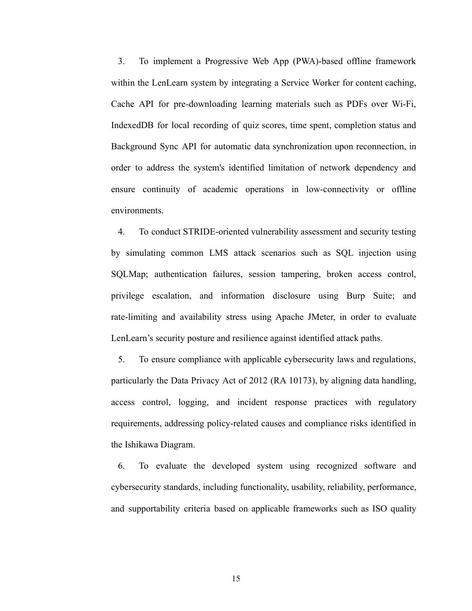
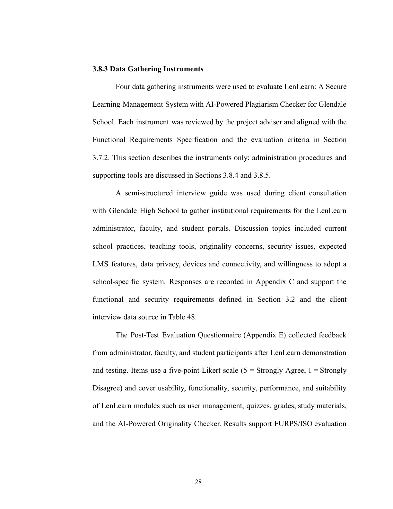
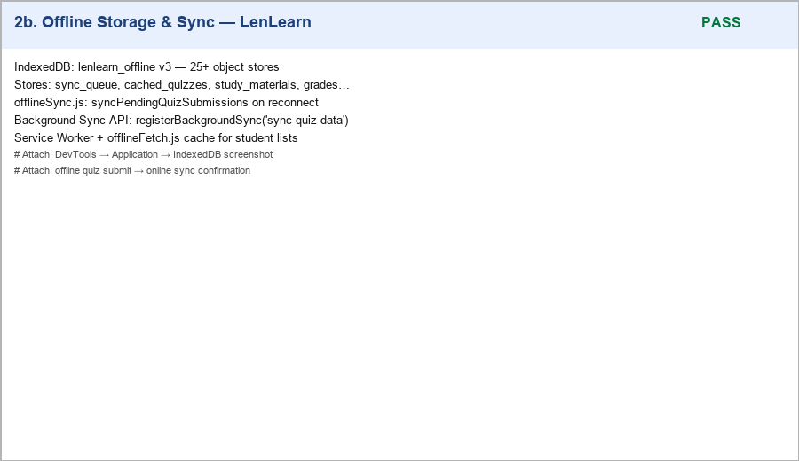
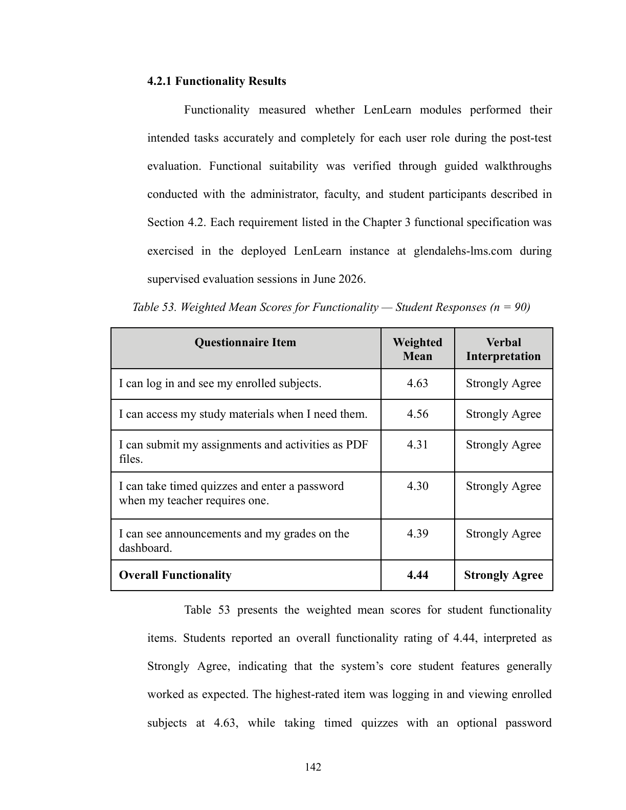
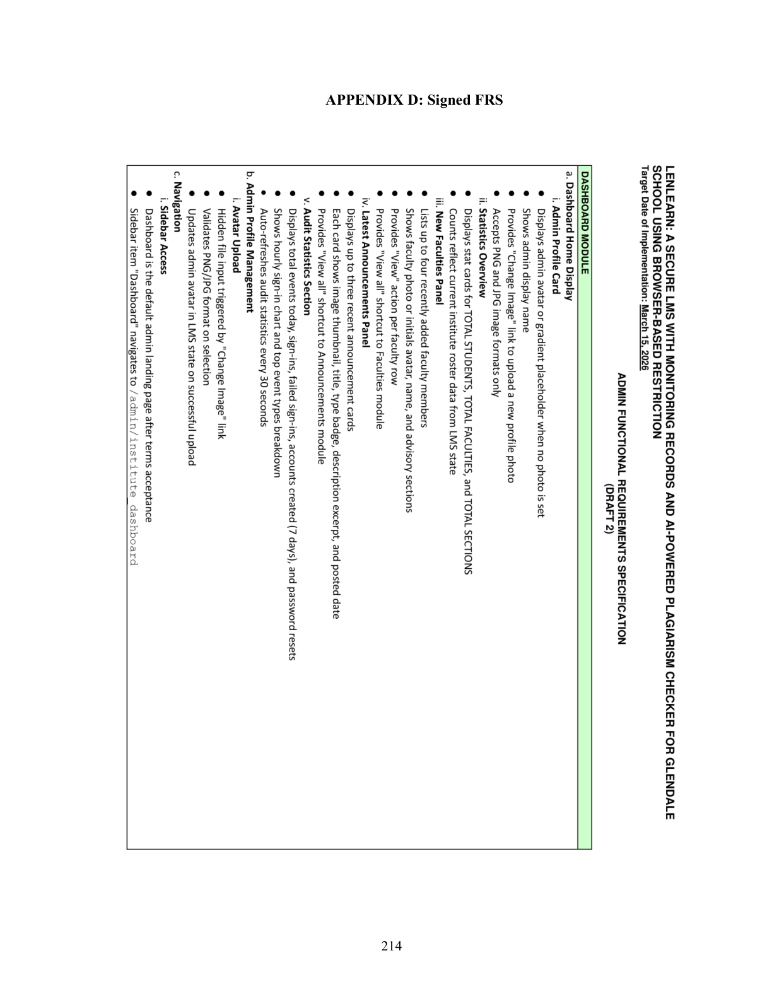
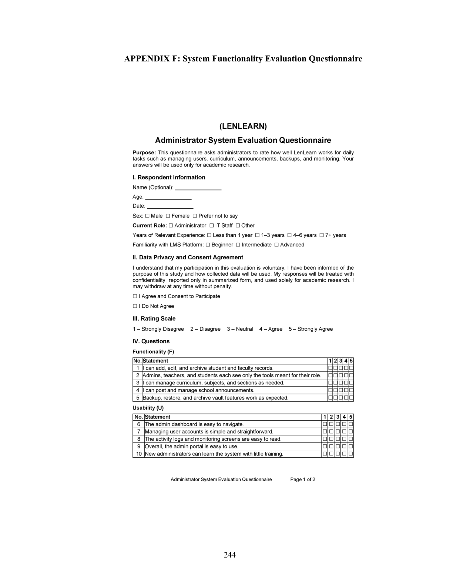
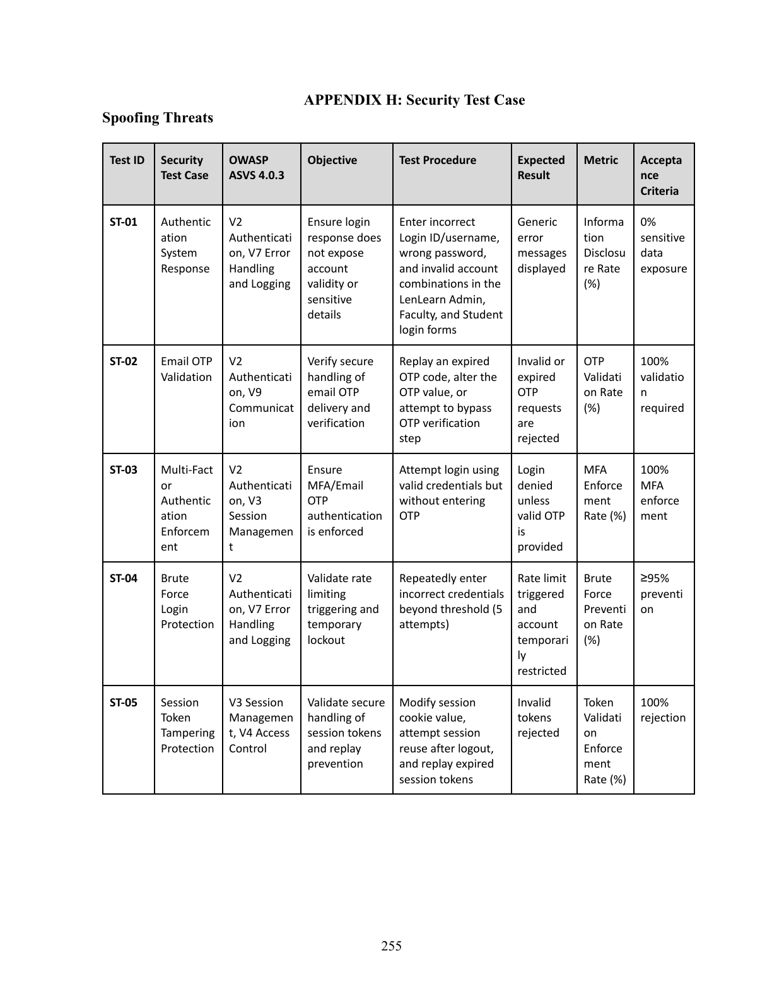

PDF p. 14 — Ch.1 Sec. 1.3 General + Specific Objectives (SO1–SO2)

PDF p. 15 — Specific Objectives SO3–SO6

PDF p. 128 — Sec. 3.8.3 Data Gathering Instruments (FURPS + STRIDE + AI tests)

PDF p. 140 — Table 52 FURPS weighted mean scores (96 respondents)

PDF p. 165 — Table 74 STRIDE 18/18 Passed

PDF p. 139 — Sec. 4.1 implemented modules (Admin, Faculty, Student)

Codebase scan — IndexedDB + Background Sync (SO3)

Live system — glendalehs-lms.com (Railway + Cloudflare)

PDF p. 138 — Sec. 4.1 System Implementation Overview

PDF p. 141 — Sec. 4.2.1 Functionality Results

PDF p. 181 — Sec. 4.4 Discussion (objective alignment)

PDF p. 188 — Sec. 5.2 Conclusions and Implications

PDF p. 189 — Sec. 5.2 STRIDE + standards adoption tied to objectives

PDF p. 191 — Sec. 6.1 System Enhancements (SO1/SO3 UX gaps)

PDF p. 192 — Sec. 6.2 Security Improvements (SO2/SO4 hardening)

PDF p. 193 — Sec. 6.3 Future Research (SO6 evaluation scope)
PDF p. 205 — Appendices A–J listing

Appendix D — Signed FRS

Appendix F — System Functionality Evaluation Questionnaire

Appendix H — Security Test Case (STRIDE)
D.2 Objective Compliance Matrix
6 Completed + 1 Partial (SO3, scope-documented)

PDF p. 187 — Ch.5 Conclusion synthesizes objective outcomes
8 / 8 readiness criteria verified